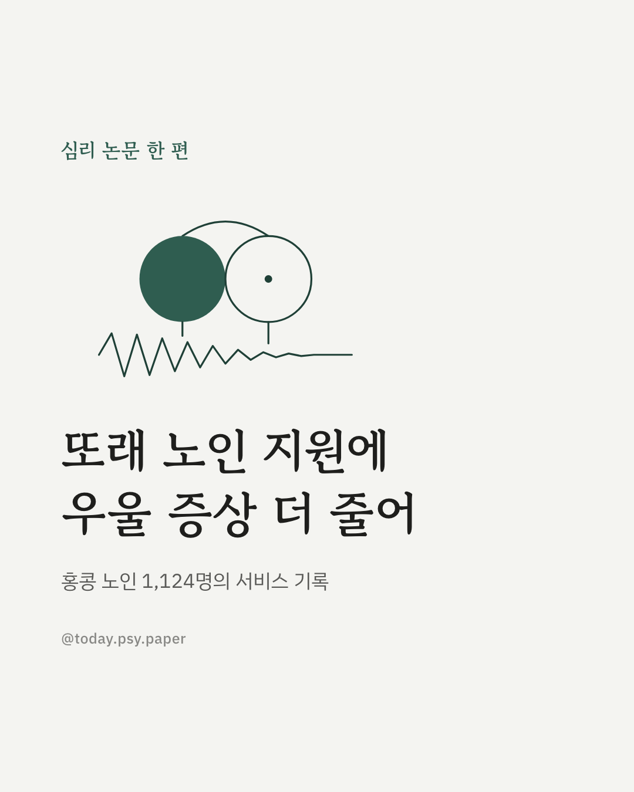
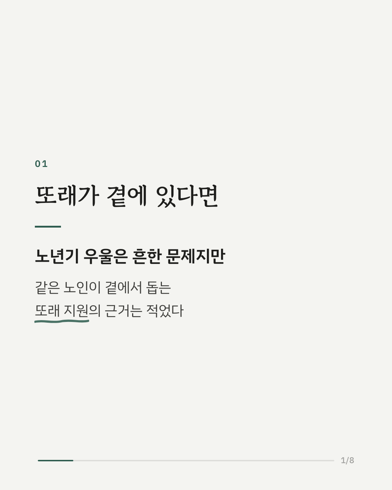
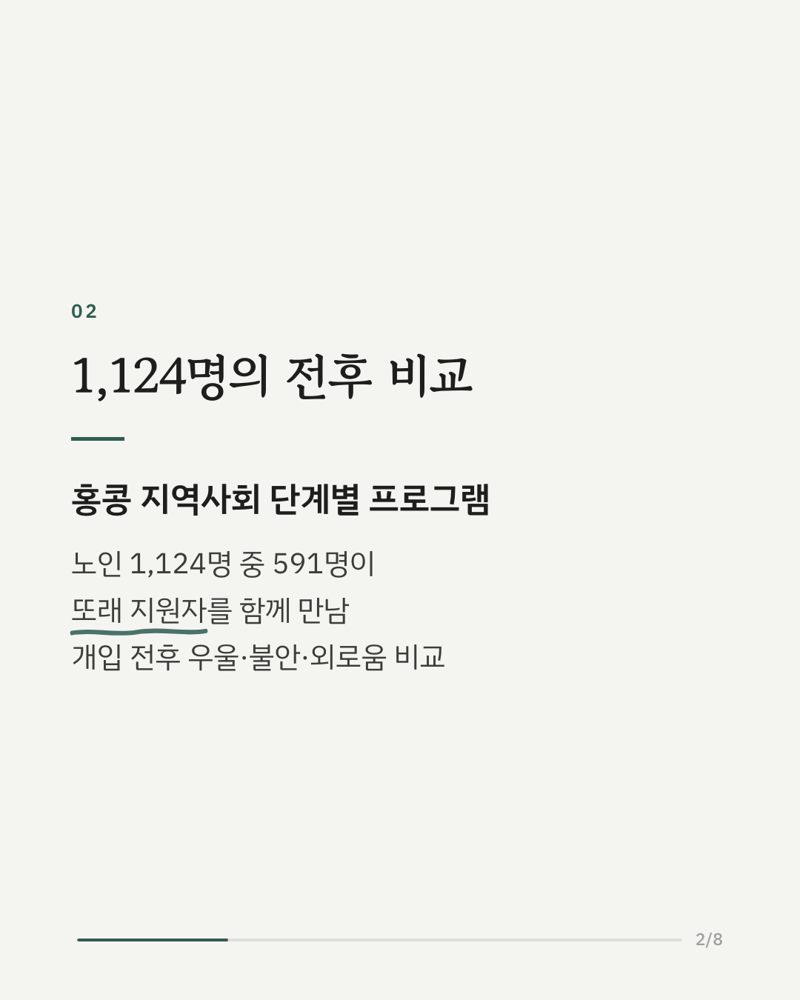
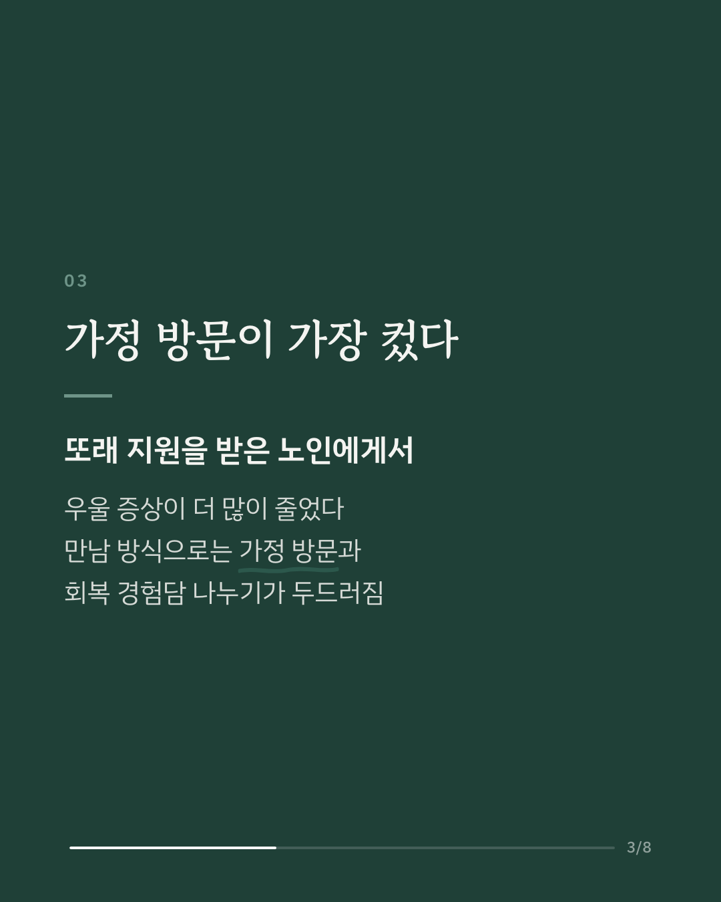
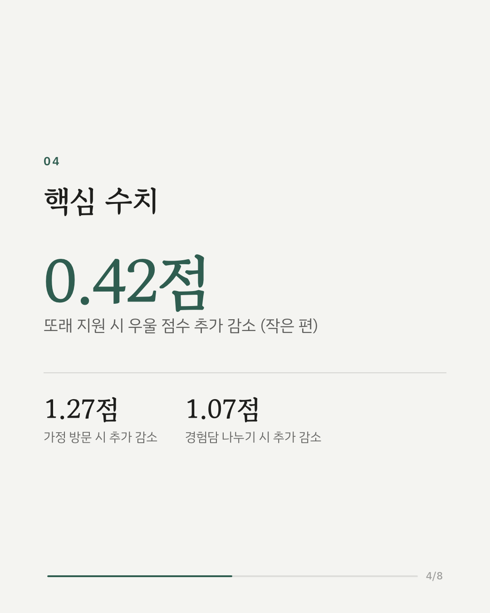
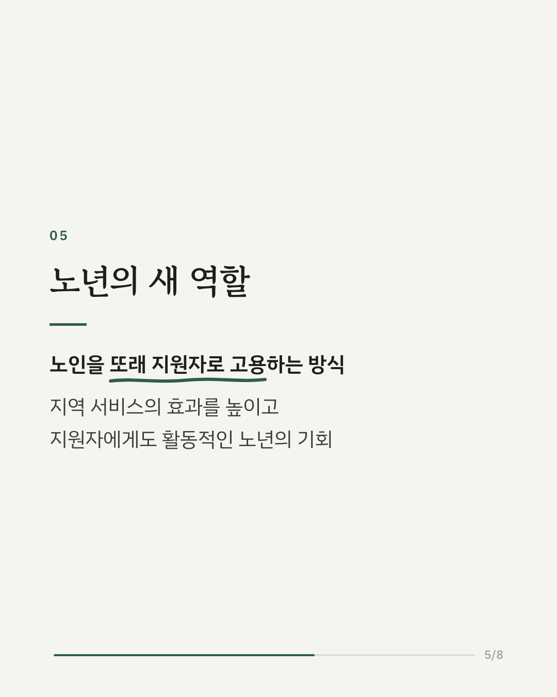
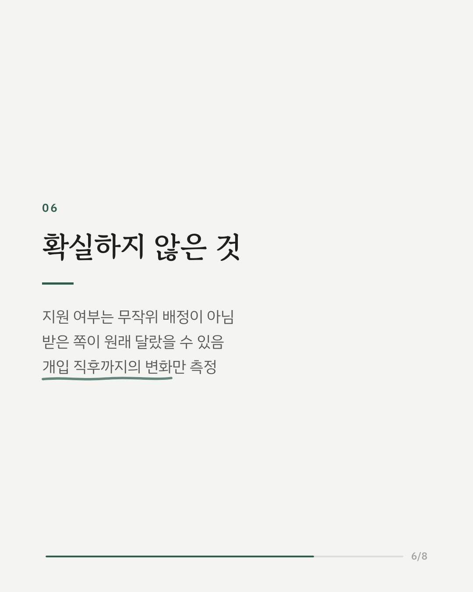
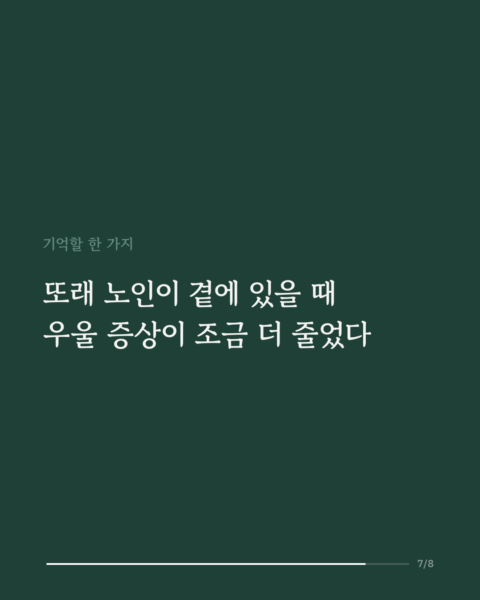
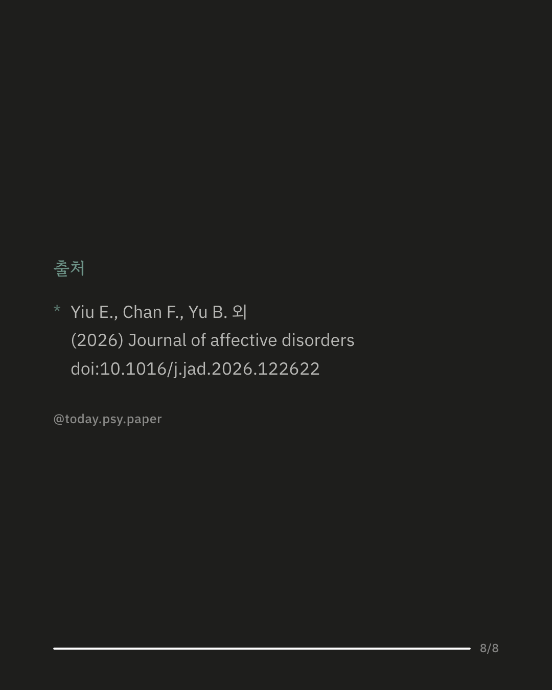

노년기 우울은 흔하지만, 같은 노인이 동료로 곁에서 돕는 '또래 지원'이 우울 증상과 외로움에 얼마나 도움이 되는지는 근거가 많지 않았습니다. 홍콩 연구진은 지역사회 단계별 정신건강 프로그램을 이용한 노인 1,124명의 기록을 분석했고, 이 가운데 591명이 또래 지원자를 함께 만났습니다. 또래 지원을 받은 노인은 그렇지 않은 노인보다 개입 전후 우울 점수(PHQ-9, 0~27점)가 평균 0.42점 더 줄었습니다. 전체 차이는 작은 편이지만, 가정 방문을 받은 경우 1.27점, 회복 경험담과 삶의 경험을 나눈 경우 1.07점 더 줄어 차이가 커졌습니다. 경력이 긴 또래 지원자를 만난 노인일수록 불안과 외로움도 더 줄었습니다. 연구진은 노인을 또래 지원자로 고용하는 방식이 서비스 효과를 높이고, 지원자 본인에게도 활동적인 노년의 기회가 될 수 있다고 봅니다. 다만 또래 지원 여부가 무작위로 정해지지 않아, 지원을 받은 노인이 처음부터 달랐을 가능성은 남아 있습니다. Journal of Affective Disorders (2026), 'Associations of one-to-one peer support service and intervention outcomes among older adults with depressive symptoms: Evidence from a community-based stepped care programme for late-life depression in Hong Kong' DOI: 10.1016/j.jad.2026.122622 #노인우울 #노년기우울 #또래지원 #외로움 #임상심리 #정신건강정보 #심리학연구 #논문리뷰
python3 publish.py 42863799